Gerador de números aleatórios com fonte física — portal, API e visualizações
Dobslit · UFPE
| Item | Valor |
|---|---|
| Documento | Guia do Usuário do Kapuã |
| Versão do documento | 2026-08-29 (revisão técnica) |
| Portal | https://bongo.dobslit.com |
| Frontend documentado | imagem qrng-web:9e36a90 |
| API documentada | imagem qrng-client-api:4137bfe |
| Branch da documentação | docs/guia-usuario-kapua-20260829 (base main = 51c1a2d) |
| API pública | OpenAPI 3.0.3 — "Kapuã QRNG — API Pública" v1.0.0 (/qrng/v1/openapi.json) |
| Serviço NIST | qrng-nist-api 1.1.0-staging-candidate, motor sp800-90b-reference (real) |
| Guia anterior | docs/_acceptance/PRIOR_Guia_Usuario_Kuapoa_QRNG.docx (SHA-256 1cc904c9…dcfd07) — preservado como referência; conteúdo incorreto não reaproveitado |
Este guia descreve o que está em produção hoje. Correções ainda não implantadas aparecem como recomendações e são identificadas como tal.
O Kapuã é a infraestrutura da Dobslit/UFPE para distribuir bytes aleatórios obtidos de uma fonte física (uma placa Red Pitaya com FPGA que digitaliza um sinal de ruído). Os bytes atravessam uma cadeia de software auditada e são disponibilizados de três formas:
https://bongo.dobslit.com) — páginas para explorar, visualizar, baixar e testar os dados.https://bongo.dobslit.com/qrng/v1) — para consumo programático (curl, Python, Jupyter…), com token pessoal.O que o Kapuã entrega hoje, com evidência: bytes; os formatos (raw/hex/base64/uint8) representam os mesmos bytes; o contrato de transporte é uint32 little-endian quando 4 bytes são lidos como inteiro; o software auditado preserva os bytes a partir do broker (server_api.py) até a resposta HTTP, sem transformação de conteúdo nas fronteiras auditadas; as visualizações aplicam transformações matemáticas documentadas; o token dá acesso programático; a proveniência é informada em cada resposta.
O que o Kapuã ainda NÃO afirma: que há "8 bits garantidos de entropia por byte"; que os dados são "100% aleatórios", "sem viés", "certificados/validados pelo NIST", "IID comprovado permanentemente" ou "prontos para qualquer aplicação criptográfica"; que a origem quântica está "comprovada pelo histograma"; que a API "melhora" a entropia; que uma resposta é "live verificada" enquanto live_verified=false. A caracterização física da fonte e a validação operacional continuam em andamento (ver seções 22, 23, 24 e 29).
Este guia cobre: o portal e suas páginas; o cadastro, a autenticação e o token; a API (endpoints, parâmetros, formatos, erros, proveniência, limites); um exemplo completo em Jupyter; o que cada visualização faz com os dados; a página de testes NIST; os estados de saúde; e as limitações conhecidas.
Sobre as figuras. As capturas de tela deste guia foram feitas em 2026-08-29 a partir do bundle de produção (qrng-web:9e36a90, mesmo arquivo assets/index-GEJGDRrN.js servido em https://bongo.dobslit.com), renderizado localmente e consumindo os endpoints QRNG reais da produção. Nenhuma figura mostra token, senha, cookie ou cabeçalho de autenticação. Em todas, a barra superior exibe origem efetiva: desconhecida — a produção não classifica as respostas como live nesta fase (ver seções 22–23). Detalhes de proveniência das imagens em docs/images/README.md.
Este guia não cobre: a construção do hardware/FPGA; a bitstream/RTL; a operação interna do broker; procedimentos administrativos. Segurança e auditoria de credenciais estão fora do escopo. Nenhum token, senha, cookie ou chave aparece neste guia, nos exemplos ou nas figuras.
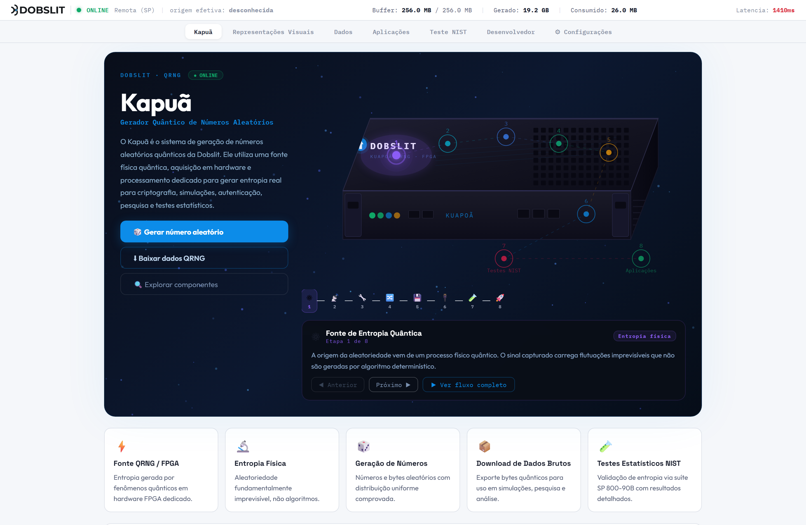
ONLINE, origem efetiva: desconhecida, buffer/gerado/consumido.O portal é uma aplicação de página única (React) servida por nginx em https://bongo.dobslit.com. A navegação principal tem estas seções:
| Seção (navegação) | O que faz |
|---|---|
| Kapuã | Página inicial: explica a cadeia de dados (FPGA → captura → buffer → aplicações), tem um widget que sorteia um número e um botão de download de 1 MiB. |
| Representações Visuais | Duas abas: Visualizações Interativas (Galáxia, Mandala, LCG Cracker, MT19937 Clone, Sonificação — PRNG × QRNG lado a lado) e Análise Estatística (Scatter, Histograma, Bits, badges de testes, Fluxo em tempo real). |
| Dados | Exportação: Raw Binário, Hexadecimal, Decimal/uint8, Faixa Personalizada, Monte Carlo (floats). Presets rápidos (loteria, dado, dataset…). |
| Aplicações | Sete demonstrações: Chave Quântica (desabilitada), Seed para IA (desabilitada), Monte Carlo π, Sorteio Auditável, Jogos (moeda/dado), Random Walk, Otimização Estocástica. |
| Teste NIST | Enfileirar e acompanhar avaliações SP 800-90B (upload de arquivo ou arquivo no servidor). |
| Desenvolvedor | Login/registro, gestão do token pessoal, playground "Notebook", uso/cota, histórico de chamadas, documentação. |
| Configurações | Escolha da fonte: Remota (SP), FPGA (Hardware) ou Pré-coletado (buffer local de demonstração). |
Barra de Hardware (topo, sempre visível): estado on-line/off-line, badge de proveniência (nunca mostra "live" sem evidência), e — quando disponível — bytes no buffer, gerados e consumidos.
Banner de fallback (global): aparece em todas as telas quando a fonte Pré-coletado está selecionada, informando quantos bytes restam, que a proveniência não está registrada e que a geração de chave/seed está bloqueada nessa fonte.
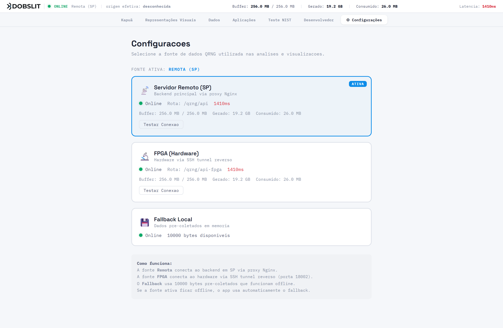
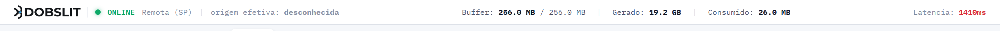
ONLINE, fonte, origem efetiva: desconhecida (nunca "live" sem evidência), buffer, gerado, consumido, latência.POST /v1/auth/register cria a conta e devolve um JWT de sessão (guardado no navegador).POST /v1/auth/login devolve o JWT de sessão.GET /v1/auth/me retorna os dados da conta autenticada.O JWT de sessão autentica a interface (gestão de token, playground, uso). Ele não é o token que você usa fora do portal — esse é o token pessoal (seção 7).
Nunca compartilhe sua senha nem seu JWT. O portal armazena o JWT apenas no seu navegador.
O token pessoal de API é a credencial para consumir a API de fora do portal (curl, Python, Jupyter, serviços).
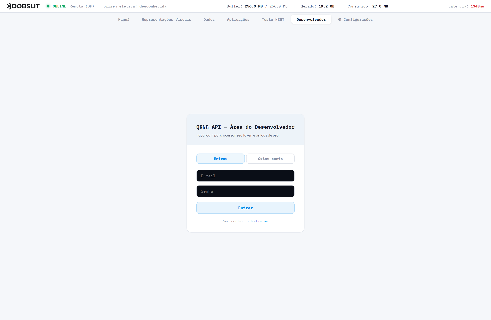
| Ação | Endpoint | Observação |
|---|---|---|
| Emitir | POST /v1/tokens | Um token por usuário. O valor completo é mostrado uma única vez (na criação/rotação). Formato: dobslit_qrng_live_<hex>. |
| Ver metadados | GET /v1/me/token | Nunca devolve o valor completo — só prefixo, data, cota, uso. |
| Rotacionar | POST /v1/me/token/rotate | Revoga o atual e emite um novo (mesma cota/nome). |
| Revogar | POST /v1/me/token/revoke | Revoga sem emitir outro. |
| Uso e cota | GET /v1/me/usage | Cota diária, uso hoje/7d/30d, histórico diário. A cota reseta à meia-noite UTC. |
| Histórico de chamadas | GET /v1/me/requests?limit=N | Últimas chamadas feitas com o token. |
No portal: aba Desenvolvedor → Token — botões Gerar, Regenerar, Revogar, e o cartão de uso/cota (com aviso a partir de 80%).
Boas práticas de segurança do token
KAPUA_API_TOKEN).dobslit_qrng_live_…).O que o token faz e o que não faz
/v1/health e /v1/me/*.Base: https://bongo.dobslit.com/qrng/v1 Autenticação: header Authorization: Bearer <API_TOKEN> (token pessoal). Alguns endpoints de consumo também aceitam o JWT de sessão; /v1/me/* aceita ambos. Documentação interativa: Swagger em /qrng/v1/docs/, ReDoc em /qrng/v1/redoc, OpenAPI JSON em /qrng/v1/openapi.json.
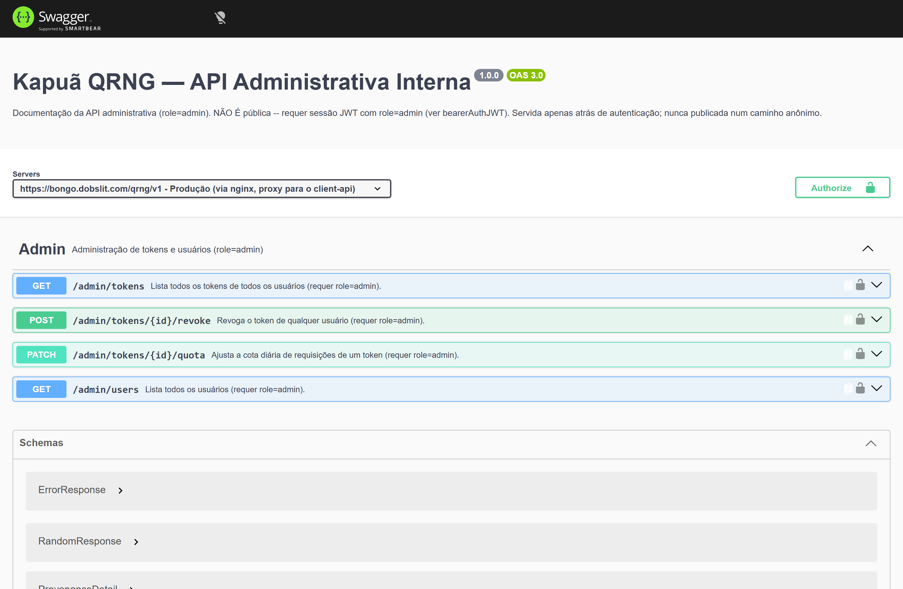
https://bongo.dobslit.com/qrng/v1/docs/ (acesso aberto, sem sessão do portal).https://bongo.dobslit.com/qrng/v1/redoc.| Método | Caminho | Auth | Descrição |
|---|---|---|---|
| GET | /v1/random?bytes=N&format=hex|base64|uint8|raw | token | Gera N bytes. format omitido = hex. |
| GET | /v1/raw?bytes=N | token | Alias de …/random?format=raw — application/octet-stream com N bytes exatos. |
| GET | /v1/public/random?bytes=N&format=… | nenhuma | Igual, anônimo, cota reduzida. |
| GET | /v1/public/raw?bytes=N | nenhuma | Raw anônimo. |
| GET | /v1/health | token | Saúde do client-api + do upstream (buffer, source_status, stream_format, sample_width_bytes, conditioned). |
| GET | /v1/health/self | nenhuma | Liveness do processo Node (não consulta o upstream). |
| POST | /v1/auth/register, /v1/auth/login · GET /v1/auth/me | — / JWT | Conta e sessão. |
| POST | /v1/tokens · GET /v1/me/token · POST /v1/me/token/rotate|revoke | JWT/token | Gestão do token. |
| GET | /v1/me/usage, /v1/me/requests | JWT/token | Uso e histórico. |
| GET | /v1/upstream/status | token | Histórico de disponibilidade do upstream (últimas 500 transições, uptime 24 h). |
| GET | /v1/metrics | — | Métricas Prometheus. |
| POST/GET | /v1/bulk-random-jobs[...] | token | Não implementado — stub que responde 501. |
/random| Parâmetro | Tipo | Default | Regras |
|---|---|---|---|
bytes | inteiro ≥ 1 | 32 | ≤ 1 048 576 com token; ≤ 65 536 no público. Acima → 413. Não-inteiro/≤0 → 422. |
format | hex | base64 | uint8 | raw | hex | Outro valor → 422. |
format=hex\|base64\|uint8 (ou omitido) → application/json:
{
"request_id": "req_…",
"source": "dobslit-qrng-ufpe-fpga",
"provenance": "unknown",
"provenance_detail": {
"configured_source": "fpga",
"instance_mode": "live",
"actual_origin": "unknown",
"transport_health": "healthy",
"buffer_health": "discontinuous",
"entropy_health": "not_assessed",
"captured_at": null,
"served_at": "2026-08-29T14:41:21.009Z",
"sample_age_ms": 120,
"capture_id": "cap_…",
"fallback_used": false,
"live_verified": false,
"provenance_version": "1",
"sequence": 10768,
"capture_sha256": "…"
},
"bytes": 8,
"format": "hex",
"random": "3f0f2ab4bd82d289",
"timestamp": "2026-08-29T14:41:21.009Z"
}random: hex = string de 2·bytes caracteres [0-9a-f]; base64 = string base64 padrão; uint8 = array de bytes inteiros em [0,255].format=raw → application/octet-stream, exatamente N bytes, Content-Length = N, sem JSON, sem prefixo, sem BOM. A proveniência vai em headers: X-QRNG-Provenance, X-QRNG-Live-Verified, X-QRNG-Fallback-Used, X-QRNG-Transport-Health, X-QRNG-Buffer-Health, X-QRNG-Entropy-Health, X-QRNG-Served-At, X-QRNG-Received-At, X-QRNG-Capture-Id, X-QRNG-Sample-Age-Ms, X-QRNG-Discontinuities, X-QRNG-Conditioned, X-Request-Id.
# hex (JSON)
curl "https://bongo.dobslit.com/qrng/v1/random?bytes=32&format=hex" \
-H "Authorization: Bearer $KAPUA_API_TOKEN"
# binário puro para um arquivo
curl "https://bongo.dobslit.com/qrng/v1/random?bytes=1024&format=raw" \
-H "Authorization: Bearer $KAPUA_API_TOKEN" -o amostra.bin
# sem token (público, cota reduzida)
curl "https://bongo.dobslit.com/qrng/v1/public/random?bytes=16&format=base64"O notebook docs/examples/kapua_jupyter_example.ipynb (Python, só biblioteca padrão) cobre, contra o contrato real da produção:
GET /v1/health (com token) e /v1/health/self (sem token);GET /v1/random?format=raw → salvar .bin, SHA-256, request_id, proveniência;format=hex → decodificar; 4. format=base64 → decodificar; 5. format=uint8 → validar 0..255 e quantidade;raw == decode(hex) == decode(base64) == bytes(uint8), SHA-256 idêntico;uint32-LE (x = b₀ + b₁·2⁸ + b₂·2¹⁶ + b₃·2²⁴; u = x/2³² ∈ [0,1)); tamanho não múltiplo de 4;GET /v1/me/usage;MISSING_TOKEN), 403 (INVALID_TOKEN), 429 e 503 (backoff exponencial), timeout — sem imprimir o token.Trecho essencial (autenticação):
import os, urllib.request, urllib.parse, json
API_TOKEN = os.environ["KAPUA_API_TOKEN"] # nunca escreva o token no código
headers = {"Authorization": f"Bearer {API_TOKEN}"}
url = "https://bongo.dobslit.com/qrng/v1/random?" + urllib.parse.urlencode(
{"bytes": 64, "format": "hex"})
req = urllib.request.Request(url, headers=headers)
body = json.loads(urllib.request.urlopen(req, timeout=30).read())
data = bytes.fromhex(body["random"]) # 2 chars por byte
assert len(data) == body["bytes"] == 64
print(body["request_id"], body["provenance"], body["provenance_detail"]["live_verified"])O notebook roda sem token caindo para/v1/public/random(demonstrado — verdocs/_acceptance/notebook_cells_run.txt). ComKAPUA_API_TOKENno ambiente, usa o caminho autenticado.
O token autentica o acesso e mede a cota — não altera, não condiciona nem melhora os dados aleatórios.
Há também um script equivalente: docs/examples/kapua_api_example.py.
Os quatro formatos são quatro representações dos mesmos bytes. Para uma amostra de N bytes:
| Formato | Tipo de resposta | Conteúdo | Decodificação no cliente |
|---|---|---|---|
raw | application/octet-stream | os N bytes, nada mais | usar os bytes direto |
hex | JSON, campo random | 2N caracteres [0-9a-f] | bytes.fromhex(s) / parseInt(s.substr(i*2,2),16) |
base64 | JSON, campo random | base64 padrão | base64.b64decode(s) / atob |
uint8 | JSON, campo random | array de N inteiros [0,255] | bytes(arr) / Uint8Array.from(arr) |
Verificado (docs/_acceptance/format_equivalence_check.mjs, 14/14; notebook célula 6):
raw == decode(hex)
raw == decode(base64)
raw == bytes(uint8)
SHA-256 idêntico em todos os formatos
N bytes solicitados == N bytes entregues
sem BOM · sem bytes extras · hex é [0-9a-f] com 2 chars/byte · uint8 em 0..255Importante: duas chamadas independentes à fonte retornam sequências diferentes (é o esperado). Nunca prove a equivalência dos formatos comparando quatro chamadas live — use uma amostra capturada uma única vez e reserialize/decodifique localmente.
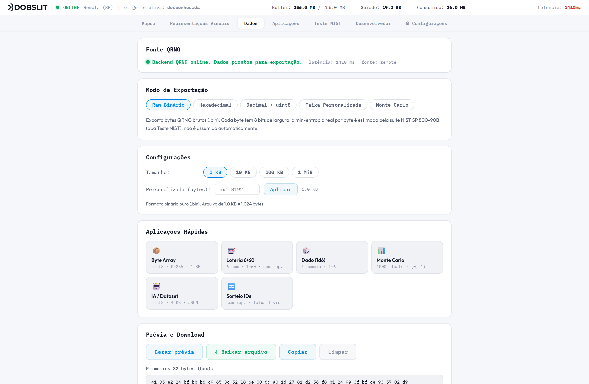
| Conceito | Valor |
|---|---|
TRANSPORT UNIT | byte |
TRANSPORT WORD | uint32 little-endian, quando 4 bytes são lidos como inteiro |
SOURCE PHYSICAL SAMPLE | desconhecida (não confirmada — ver seção 23) |
CONDITIONING (na FPGA) | não confirmado / desconhecido |
API CONDITIONING | ausente (o software repassa os bytes verbatim; header X-QRNG-Conditioned: false) |
Leitura de uint32 (little-endian): x = b₀ + 2⁸·b₁ + 2¹⁶·b₂ + 2²⁴·b₃
Isto equivale a DataView.getUint32(i, true) em JavaScript e a struct.unpack("<I", …) em Python. Não use big-endian: para os bytes 00 01 02 03, LE dá 50462976 e BE dá 16909060 — números diferentes. O frontend usa readUint32LE (com >>> 0, portanto sem sinal) de forma consistente em todos os lugares.
Normalização para [0, 1): u = x / 2³². Máximo possível 0xFFFFFFFF / 2³² = 0.99999999976… < 1. Nunca se divide por 2³²−1; nunca se produz ≥ 1.
Bytes que não completam 4: ao converter um buffer em array de uint32, os 1–3 bytes finais que não formam uma palavra completa são descartados (i + 3 < comprimento). A mesma regra vale em toda a base.
Quantização discreta (só na Análise Estatística): a página Análise Estatística normaliza cada byte por b / 255 → 256 níveis discretos em [0, 1] inclusive (o valor 1.0 é alcançável, por b = 255). É intencional e testado. Não confunda com o Monte Carlo (uint32 / 2³², contínuo em [0, 1)).
| Origem | Rota | Formato do arquivo | Tamanho |
|---|---|---|---|
| Dados → Raw Binário | …/random?format=raw | .bin (application/octet-stream, N bytes exatos) | 1 B – 1 MiB |
| Dados → Hexadecimal | …/random?format=hex | .txt ou .json (separadores configuráveis) | 1 B – 1 MiB |
| Dados → Decimal/uint8 | …/random?format=hex | .csv / .txt / .json (inteiros 0–255) | 1 B – 1 MiB |
| Dados → Faixa Personalizada | …/random?format=hex | .json / .csv / .txt (inteiros em [min,max]) | até 100 000 números |
| Dados → Monte Carlo | …/random?format=hex | .csv (15 casas) / .json (floats [0,1)) | até 100 000 pontos |
Downloads em massa (DataExport) | …/random?format=raw | .bin | 1 KB – 50 MB |
| Kapuã → download 1 MiB | …/random?bytes=1048576&format=hex | .bin (hex decodificado no cliente) | 1 MiB |
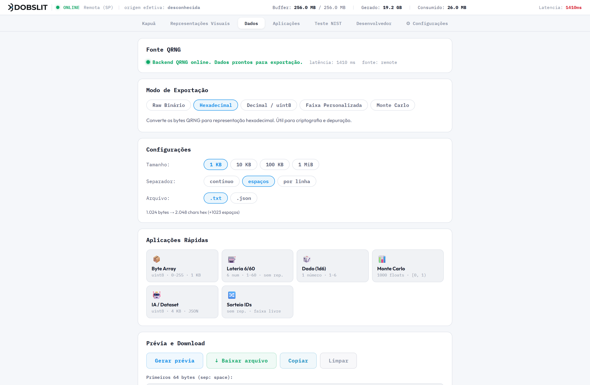
.txt/.json) configuráveis.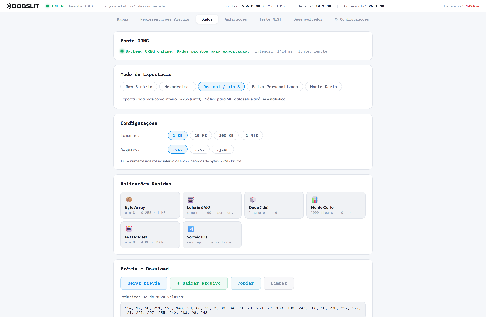
.csv/.txt/.json.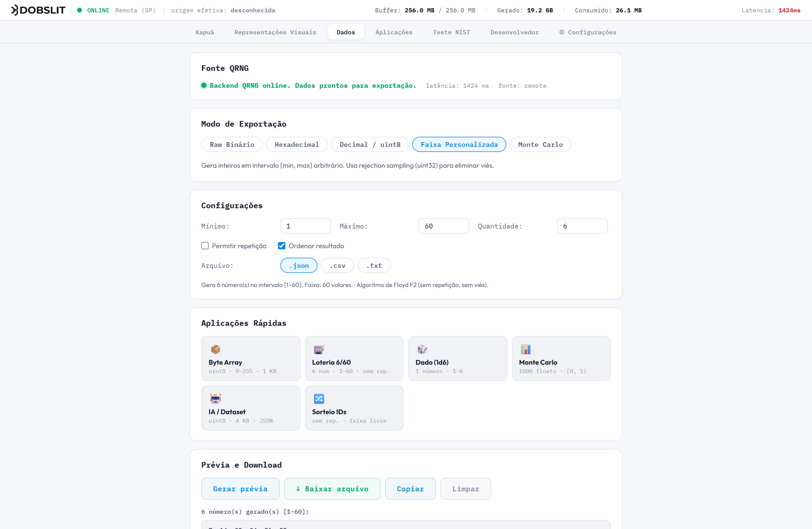
[min, max] com/sem repetição, por rejection sampling (sem viés de módulo) ou algoritmo de Floyd F2.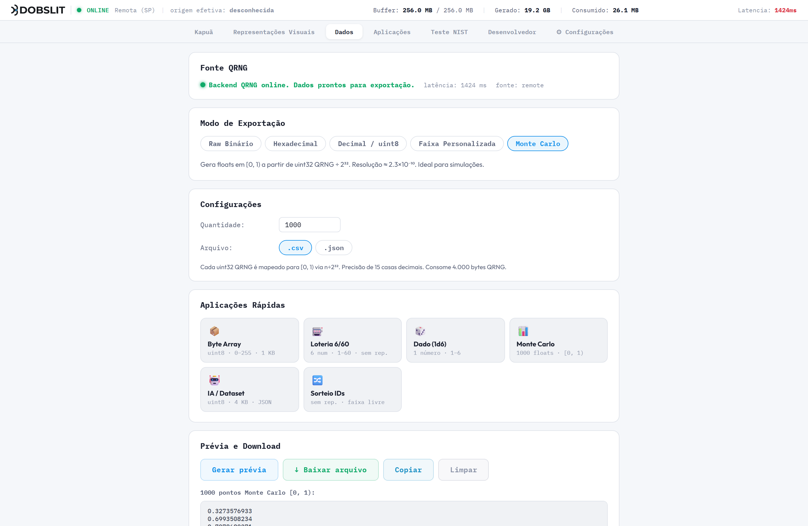
[0, 1) via uint32 ÷ 2³²; consumo de 4 bytes por valor.Observações:
kuapua_qrng_ (grafia antiga). Recomendação (não implantada): padronizar para kapua_qrng_. Ver seção 29.format=hex e decodifica no navegador; os bytes são idênticos ao format=raw, apenas o transporte difere.Todas as visualizações consomem os mesmos bytes da fonte selecionada e aplicam transformações matemáticas determinísticas documentadas (fórmulas na seção correspondente e em docs/VISUALIZATION_DATA_FLOW.md). Nenhuma visualização "melhora" os dados; elas apresentam os dados.
/qrng/api…); as Visualizações Interativas usam a rota autenticada (/qrng/v1/random, com o JWT de sessão do portal).Math.random() e rotulam isso ("QRNG · Math.random() — erro de rede / pré-coletado esgotado"). Nenhum uso de Math.random() é apresentado como QRNG (ver a classificação completa em docs/VISUALIZATION_DATA_FLOW.md).0 é entropia legítima e nunca é trocado por PRNG.As seções 14–21 detalham cada visualização.
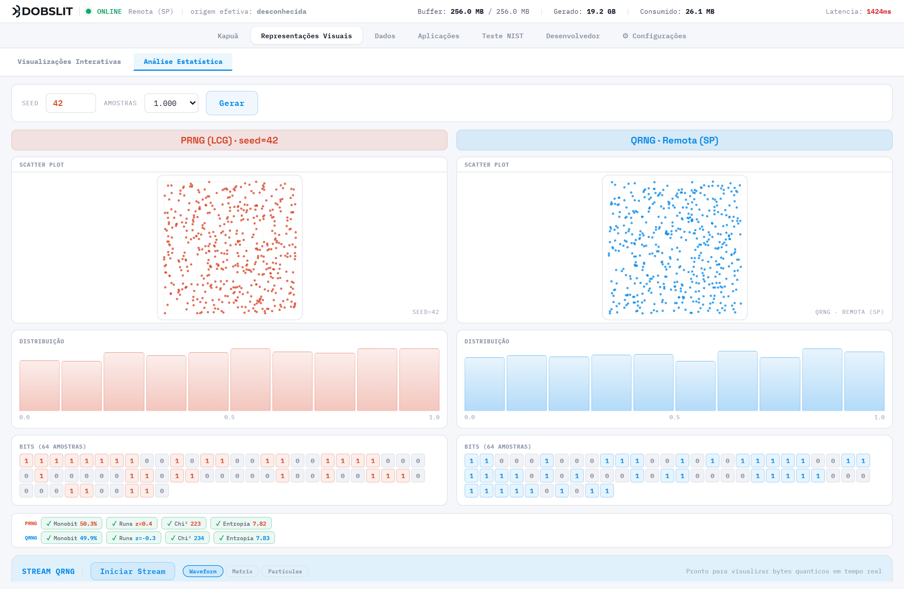
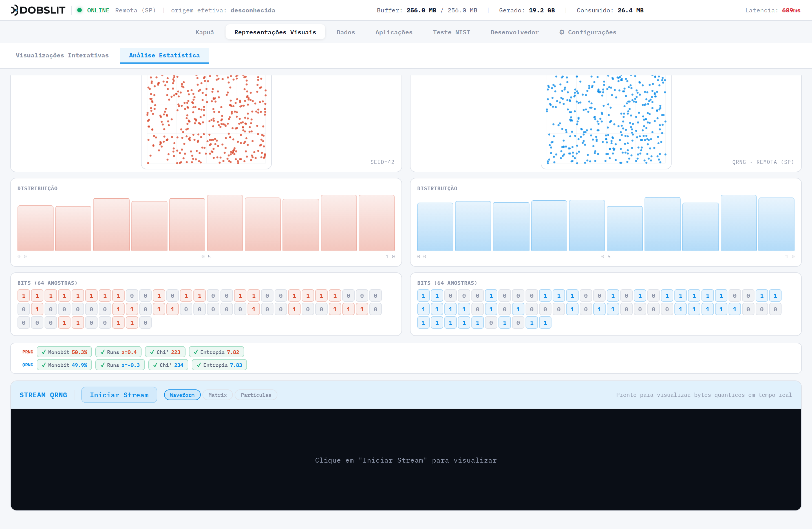
/qrng/api/stream).count bytes (200–10 000), normalizados por b/255 → [0, 1].v: idx = min(⌊v·10⌋, 9); incrementa buckets[idx]. A altura de cada barra é count/max·100%.0.0, 0.5, 1.0. O tooltip mostra a faixa do bin e a contagem.v = 1.0 (byte 255) cai no último bin; 10 bins é grosseiro; a amostra é pequena.count bytes → b/255; pares consecutivos (v[2k], v[2k+1]).[0,1]², x = v[2k], y = v[2k+1] (2 bytes por ponto).[0,1] (PRNG e QRNG).bit = v > 0.5 ? 1 : 0. Renderiza 64 células 0/1.0.5 faz disto um teste de paridade grosseira, não uma extração de bits.Ao lado das colunas há quatro badges calculados no navegador sobre ~2000 bytes acumulados:
| Badge | Cálculo | "Passou" se | O que não é |
|---|---|---|---|
| Monobit | proporção de bits 1 | |ratio − 0.5| < 0.03 | não é o Frequency Test completo do SP 800-22 |
| Runs | z-score do nº de corridas | |z| < 2.58 | idem |
| Chi² | Σ (obs−esp)²/esp sobre 256 valores | χ² < 310 | sem tabela exata |
| Entropia | Shannon −Σ p·log₂p por byte | > 7.5 bits | não é min-entropia; não é SP 800-90B |
Esses badges dão um sinal rápido lado a lado. Não produzem crédito de entropia nem conformidade. Para avaliação séria, use a página Teste NIST (seção 24).
count·4 + 16 bytes; lidos como uint32-LE.n: push(n / 2³²). Consome 4 bytes por float.count floats em [0, 1) (nunca ≥ 1); download .csv (15 casas) ou .json.uint32/2³² (resolução ≈ 2,33·10⁻¹⁰); lá é byte/255 (256 níveis).nPoints·8 bytes → 2·nPoints uint32-LE.x_i = uint32ToFloat(u32[2i]) = u32[2i] / 2³²y_i = uint32ToFloat(u32[2i+1]) = u32[2i+1] / 2³²inside = Σ_i [ x_i² + y_i² ≤ 1 ]π̂ = 4 · inside / nPointserro% = |π̂ − π| / π · 100x, y ∈ [0, 1) — nunca = 1.inside / total e o valor π̂ vêm do mesmo laço — não há divergência entre a tela e o número.u32[k] seria undefined e o código usa ?? 0 (o ponto vira (0,0), contado como "dentro"). Com bytes = nPoints·8 isso não ocorre na prática.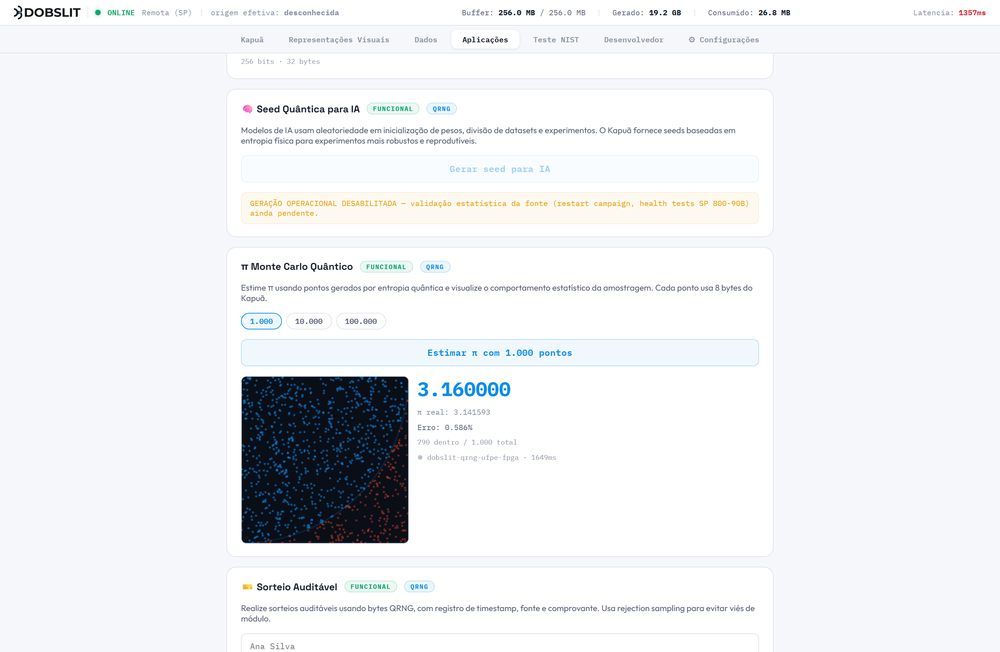
π̂, erro percentual e inside/total. Acima, o card "Seed Quântica para IA" com o aviso "GERAÇÃO OPERACIONAL DESABILITADA".Status atual: a função existe na biblioteca (src/lib/qrngHelper.js, exponentialFromUniform) e tem teste de regressão, mas não há uma tela dedicada "Distribuição Exponencial" na interface de produção. Esta seção documenta a função para quem a usar via API/código.
X = −μ · ln(1 − u) (método da transformada inversa).μ é a média da distribuição (não a taxa λ). Equivalente: X = −ln(1−u)/λ com λ = 1/μ.u: vem de uint32/2³², logo 0 ≤ u ≤ 0.99999999976 < 1 → ln(1−u) é sempre finito (nunca log(0)).u = 0: X = 0 (resultado válido)./qrng/v1/random (8192 por recarga). Fallback rotulado para Math.random() em caso de erro de rede / buffer esgotado.s' = (s · 1103515245 + 12345) mod 2³², value = (s' >>> 16)/65536 ∈ [0,1) — quantizado a 8 níveis nas visualizações para tornar visível a estrutura do gerador linear.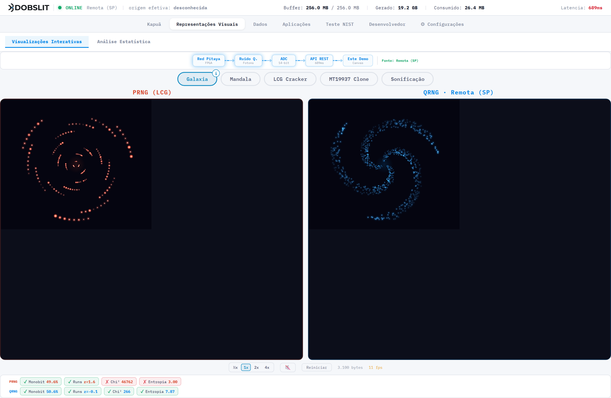
Disponíveis nas Visualizações Interativas.
| Visualização | Bytes → parâmetros (verificado) | Observação |
|---|---|---|
| Galáxia | por estrela (2 bytes): raio = (b1/255)·0.88 + 0.05; spread angular = ((b2/255) − 0.5)·0.6; brilho = 0.3 + (b2/255)·0.7; tamanho = 1 + (b1/255)·2 | a distribuição final é uma espiral por construção — não é uniforme, e não deve ser lida como teste estatístico |
| Mandala | por ponto (2 bytes): ângulo setorial = (b/255)·(2π/simetria); raio = b/255 | idem — padrão radial por design |
| Sonificação | byte → nota musical (mapeamento de escala); evento {type:"note", byte} → playNote(byte) | o ruído de percussão do sintetizador usa Math.random() para gerar a amostra de áudio — isso não representa dados, é timbre |
Nas três, Math.random() só é usado se o array de bytes estiver vazio; o valor 0 é preservado.
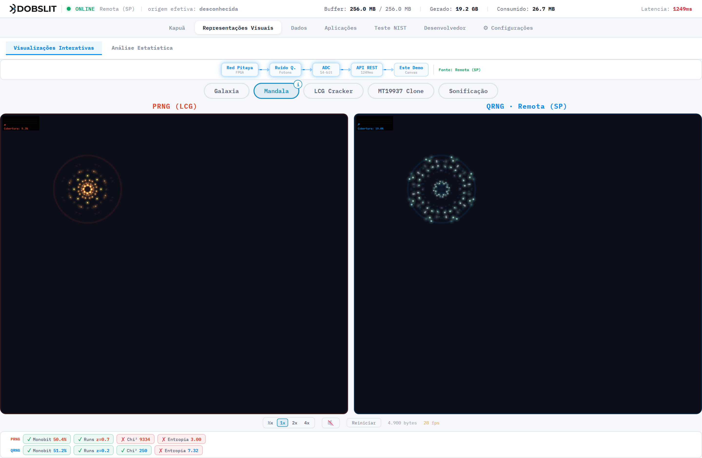
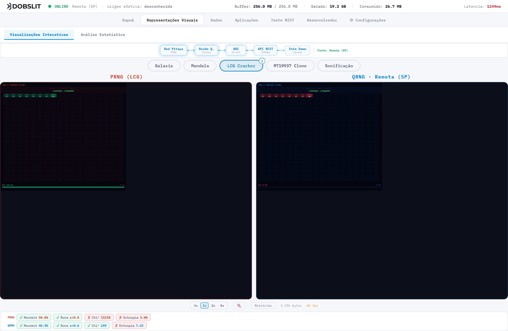
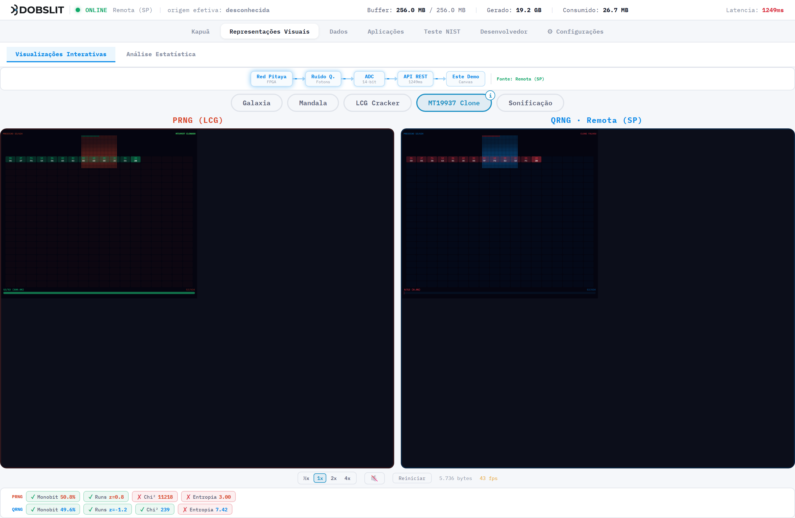
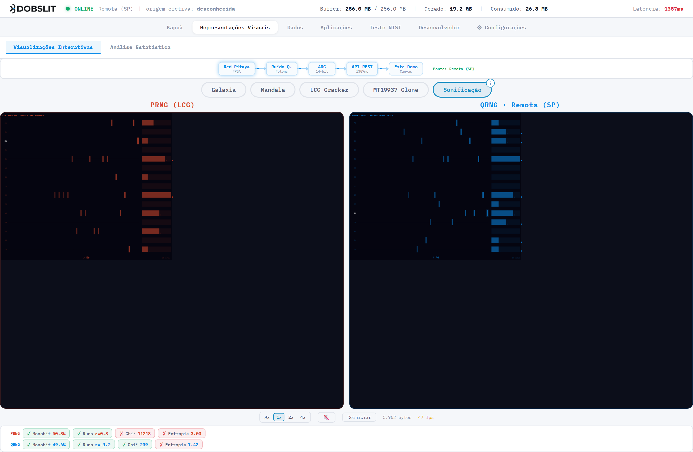
Outras aplicações da aba "Aplicações" (todas consomem bytes QRNG e usam rejection sampling onde há inteiros):
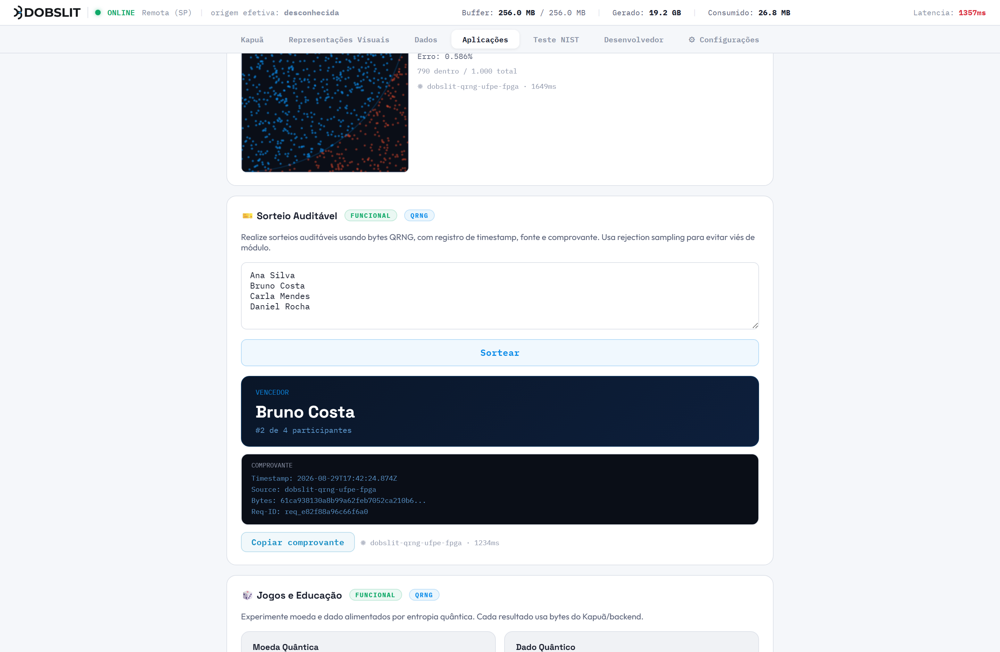
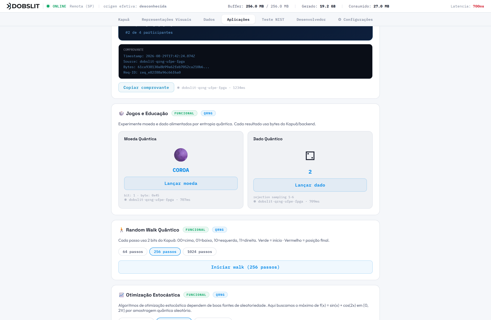
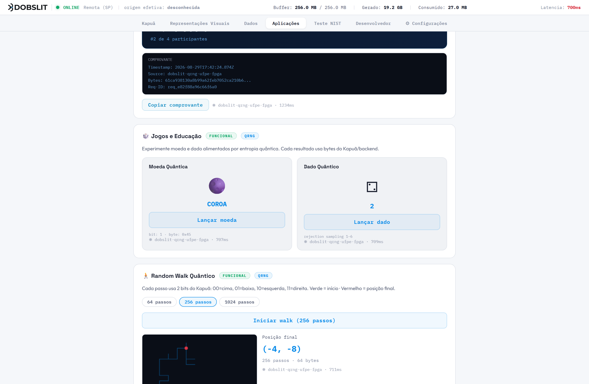
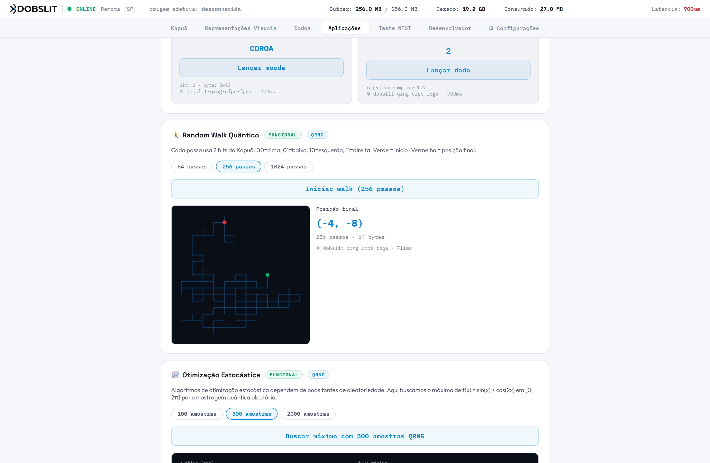
uint32 ÷ 2³² · 2π.Cada resposta traz uma proveniência por resposta (não uma etiqueta fixa da instância):
| Campo | Significado |
|---|---|
provenance / X-QRNG-Provenance | origem efetiva desta resposta: live, replay, fixture, historical, fallback ou unknown |
provenance_detail.instance_mode | capacidade/modo da instância (teto — nunca eleva uma resposta acima do que pode provar) |
provenance_detail.actual_origin | igual a provenance |
live_verified / X-QRNG-Live-Verified | true somente quando há evidência de captura física (captured_at) confirmando o caminho live nesta resposta |
captured_at / X-QRNG-Captured-At | carimbo físico da FPGA (hoje sempre null — pendente do RTL) |
received_at / X-QRNG-Received-At | instante em que o broker recebeu os bytes (fronteira de frescor verificável hoje) |
served_at / X-QRNG-Served-At | instante em que a API respondeu |
sample_age_ms | idade da amostra por captured_at (ou received_at, na ausência) |
capture_id, sequence, capture_sha256 | identificação e integridade do bloco (envelope v1) |
fallback_used | se true, actual_origin é sempre fallback |
Regras invioláveis (implementadas em qrng-client-api/lib/provenance.js):
actual_origin = "live" só com evidência do caminho live nesta resposta.fallback_used = true ⇒ actual_origin = "fallback" (prevalece sobre a configuração).replay/fixture/historical nunca reporta live.sample_age_ms > máximo) não continua live.unknown nunca é representado como live — no frontend (HardwareStatusBar), nos exemplos e na API.| Estado | Quando aparece | O que significa para você |
|---|---|---|
unknown | estado atual da produção | O caminho até a fonte física não pôde ser comprovado nesta resposta. Os bytes vieram do broker, mas sem carimbo de captura física (captured_at = null). Trate como "dados brutos da fonte, sem verificação live" — não como live. |
live | (não ocorre hoje) | Só com captured_at presente + upstream saudável + buffer saudável + amostra recente + integridade OK. Enquanto o RTL da FPGA não emitir captured_at, isto não acontece. |
fallback | rede falhou e um caminho alternativo serviu os bytes | Não é a fonte pedida. live_verified = false. |
replay / historical | instância configurada para reprodução/arquivo | Nunca é live. |
| Fonte "Pré-coletado" (escolha do usuário em Configurações) | buffer local de 10 000 bytes | Proveniência não registrada (unknown), finito, sem repetição na sessão; não é medida ao vivo do hardware; geração de chave/seed bloqueada nessa fonte. Banner global avisa. |
Por que a produção fica em unknown de propósito: o campo chama-se actual_origin. Sem evidência física da captura, marcá-lo como live seria incorreto. A configuração LIVE_ALLOW_WITHOUT_CAPTURE_EVIDENCE está desligada; portanto a produção reporta unknown até o upstream carimbar a captura. Isso é o comportamento correto e desejado nesta fase.
Onde: portal → Teste NIST. API: https://bongo.dobslit.com/qrng/nist/.
A página executa a suíte NIST SP 800-90B (implementação de referência sp800-90b-reference) sobre uma amostra e mostra o resultado. Não é um monitor contínuo da fonte.
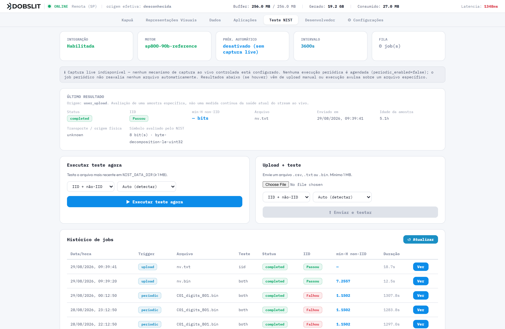
sp800-90b-reference, PRÓX. AUTOMÁTICO: desativado (sem captura live)), banner "Captura live indisponível", último resultado, ações "Executar teste agora" / "Upload + teste" e histórico de jobs (IID Passou/Falhou, min-H não-IID, duração).Como usar
NIST_DATA_DIR no servidor (≥ 1 MB). Escolha o tipo (IID + não-IID, Apenas IID, Apenas não-IID) e o formato (auto, raw/.bin, uint32 texto, bits 0/1)..csv, .txt ou .bin (mín. 1 MB, máx. 128 MiB). Mesmas opções.queue_depth), pelo status do job (queued → running → completed/failed) e pelo Histórico. Cada job abre um modal com Resumo, Estimadores (duas trilhas) e Log completo (stdout/stderr).O que os números querem dizer
iid_passed = passou/falhou.iid_passed = false, o crédito é h_min_non_iid = min(H_original, 8 × H_bitstring) (bits por símbolo de 8 bits). Se iid_passed = true, usa-se a trilha IID. O modal mostra qual trilha limita e qual estimador limitante corresponde ao h_min.Limites e ressalvas (explícitos na própria página)
live_capture_configured = false; nenhuma execução periódica é agendada.synthetic_result = false).A saúde é reportada em três eixos ortogonais (nunca inferidos um do outro):
| Eixo | Header / campo | Valores | Significa |
|---|---|---|---|
| Transporte | X-QRNG-Transport-Health / transport_health (alias source_health) | healthy | degraded | failed | unknown | os bytes estão fluindo da FPGA ao broker? |
| Buffer | X-QRNG-Buffer-Health / buffer_health | healthy | degraded | discontinuous | unknown | o ring buffer está contíguo? |
| Entropia | X-QRNG-Entropy-Health / entropy_health | not_assessed | healthy | degraded | failed | RCT/APT (SP 800-90B §4.4). Default not_assessed — os health tests ainda não rodam no caminho live. |
No portal:
Hoje, em produção: transport_health = healthy, buffer_health = discontinuous (X-QRNG-Discontinuities = 256), entropy_health = not_assessed. O discontinuous decorre de o broker contabilizar todo evento de drop-oldest (backpressure normal quando o buffer enche sem consumidor) como descontinuidade — ver seção 29.
Todos os erros da API têm o mesmo formato JSON: { "request_id": "req_…", "error": "CÓDIGO", "message": "texto" }.
| HTTP | error | Quando | O que fazer |
|---|---|---|---|
401 | MISSING_TOKEN | sem header Authorization | adicionar Authorization: Bearer <token> |
403 | INVALID_TOKEN | token presente, inválido/revogado | rotacionar/gerar novo token |
404 | NOT_FOUND | rota inexistente | conferir o caminho |
413 | REQUEST_TOO_LARGE | bytes acima do limite (1 MiB com token, 64 KiB público) | reduzir bytes ou usar token |
422 | INVALID_BYTES / INVALID_FORMAT | bytes não inteiro/≤0, ou format fora de hex|base64|uint8|raw | corrigir o parâmetro |
429 | (rate limit / cota) | rate limit por IP (público, ~20/60 s) ou cota diária de requests/bytes | backoff exponencial; ver RateLimit-* / Retry-After; não reutilizar bytes antigos |
502 | UPSTREAM_* | o broker respondeu com erro ou formato não suportado | tentar de novo mais tarde |
503 | INSUFFICIENT_ENTROPY / upstream indisponível | buffer com menos bytes que o pedido, ou upstream fora | reduzir bytes e/ou aguardar; backoff |
No portal, os erros aparecem como mensagens amigáveis (ex.: "QRNG indisponível no momento (túnel FPGA offline)", "Tempo limite atingido aguardando dados QRNG"), sem cair silenciosamente para outra fonte.
| Contexto | Limite por requisição | Rate limit / cota |
|---|---|---|
/v1/random (com token) | 1 048 576 bytes (1 MiB) | cota diária de requests e de bytes por token (ver GET /v1/me/usage); reseta à meia-noite UTC; aviso no portal a partir de 80% |
/v1/public/random (anônimo) | 65 536 bytes (64 KiB) | rate limit por IP: RateLimit-Policy: 20;w=60 (≈ 20 req / 60 s) + cota pública diária de requests/bytes |
| Downloads no portal | 1 MiB (aba Dados) / 50 MB (downloads em massa) | herdam os limites da rota usada |
| Upload NIST | 128 MiB, extensões .bin / .csv / .txt, mínimo 1 MB | fila do serviço NIST |
Para lotes maiores que 1 MiB, faça várias requisições (cada uma é uma amostra independente) — não há endpoint de lote assíncrono (/v1/bulk-random-jobs é um stub que responde 501).
Estas funcionalidades não estão disponíveis hoje (por decisão, enquanto a fonte não é validada):
/v1/entropy, /v1/random/cryptographic, /v1/keys, /v1/seed, /v1/nonce — todas retornam 404 (verificado).blockedOperational = true); o botão mostra "GERAÇÃO OPERACIONAL DESABILITADA — validação estatística da fonte (restart campaign, health tests SP 800-90B) ainda pendente".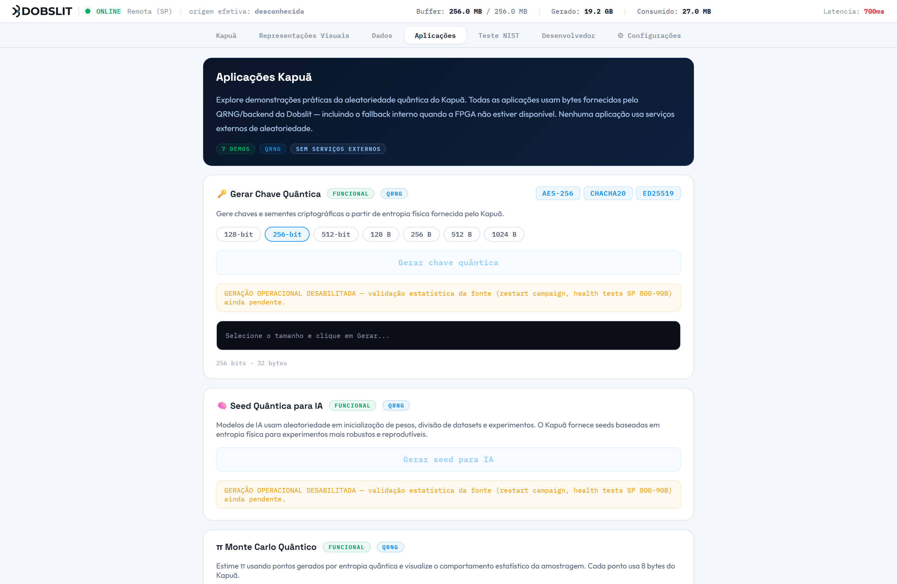
/v1/bulk-random-jobs* — stub, responde 501.live_capture_configured = false; sem execuções periódicas.live_verified = true: não ocorre enquanto a FPGA não carimbar captured_at.provenance = unknown, live_verified = false, captured_at = null — intencional. Não trate os dados como "live verificado".buffer_health = discontinuous / X-QRNG-Discontinuities = 256 em produção. O broker conta todo drop-oldest (backpressure normal) como descontinuidade. Uma correção (contar só realinhamentos e perdas reais) existe em branch, não implantada.entropy_health = not_assessed sempre.physical-layer/FPGA_INSPECTION_RESULT.md; a análise de proveniência detalhada do bitstream está em physical-layer/FPGA_PROVENANCE.md na branch investigate/fpga-vivado-artifacts-20260829).byte/255 → alcança 1.0. É intencional e testado; não confundir com o Monte Carlo (uint32/2³², [0,1))./qrng/api/ e /qrng/api-fpga/ respondem sem token (achado de auditoria; fechar exige mudança de nginx autorizada).kuapua_qrng_ → kapua_qrng_; qrng_<n>.bin → kapua_qrng_<n>.bin; badge "Funcional" nos cards desabilitados; banner de fallback mais visível nas Visualizações Interativas. Ver docs/USER_GUIDE_EVIDENCE_MATRIX.md (B1–B4).O Kapuã é um QRNG "quântico"? A fonte é física (ruído digitalizado por uma FPGA). A caracterização que confirmaria a natureza e a qualidade da entropia está em andamento. Use os dados como "bytes brutos de uma fonte física, em validação".
Posso usar os bytes para gerar chaves/senhas/tokens? Não como material operacional — a geração criptográfica está desabilitada de propósito. Para pesquisa e simulação, sim.
Os 4 formatos dão dados diferentes? Não. raw, hex, base64 e uint8 são a mesma sequência de bytes, representada de formas diferentes. (Cada chamada nova dá bytes novos — isso sim é esperado.)
Por que duas chamadas seguidas dão resultados diferentes? Porque é uma fonte de aleatoriedade. Para comparar formatos, use uma amostra e reserialize localmente.
O token melhora a qualidade dos dados? Não. O token autentica e mede cota. Os bytes são idênticos com ou sem token.
"unknown" quer dizer que está quebrado? Não. Quer dizer que não há prova de que aquela resposta veio do caminho live com captura física. Os bytes fluem normalmente; o que falta é o carimbo de proveniência física.
O histograma "uniforme" prova que é aleatório? Não. É uma inspeção visual. Avaliação séria: página Teste NIST — e mesmo ela avalia a amostra, não emite um selo permanente.
Como faço para baixar 10 MB? Aba Dados → Raw Binário ou downloads em massa (format=raw). Pela API, faça várias requisições de até 1 MiB.
| Termo | Definição |
|---|---|
| byte | unidade de 8 bits; a unidade de transporte do Kapuã |
| uint32-LE | inteiro de 32 bits sem sinal, lido em little-endian: b₀ + b₁·2⁸ + b₂·2¹⁶ + b₃·2²⁴ |
| little-endian / big-endian | ordem dos bytes ao montar um inteiro; o Kapuã usa little-endian |
| integridade dos bytes | os bytes chegam ao cliente exatamente como saíram da fronteira auditada, sem alteração |
| transformação de formato | reapresentar os mesmos bytes (hex/base64/uint8) — não muda o conteúdo |
| distribuição observada | como os valores de uma amostra se espalham (histograma, scatter) |
| entropia (Shannon) | −Σ p·log₂ p; mede incerteza média; não é o que a norma criptográfica exige |
| min-entropia (H∞) | −log₂(max p); a medida conservadora usada pelo SP 800-90B |
| IID / não-IID | hipótese de independência e distribuição idêntica dos símbolos; define qual conjunto de estimadores se aplica |
| condicionamento (conditioning) | pós-processamento que compacta/uniformiza a entropia (hash, XOR, extractor). No Kapuã: ausente no software; desconhecido na FPGA |
| aptidão criptográfica | conjunto de requisitos (SP 800-90B/A/C) para usar a fonte em chaves/seeds/nonces. Não atendida hoje |
| RCT / APT | Repetition Count Test / Adaptive Proportion Test — testes de saúde contínuos do SP 800-90B |
| proveniência | de onde veio esta resposta (live/fallback/unknown/…) |
| fallback | fonte alternativa quando a principal falha; sempre identificado |
| pré-coletado | buffer local de 10 000 bytes de demonstração; proveniência unknown; não é medida ao vivo |
| rejection sampling | técnica que descarta parte do intervalo para gerar inteiros uniformes sem viés de módulo |
| modulo bias | distorção de x % n quando n não divide o intervalo do gerador |
| PRNG / LCG / MT19937 | geradores pseudoaleatórios determinísticos; no Kapuã aparecem só como comparação didática |
| token pessoal | credencial dobslit_qrng_live_<hex> para uso da API fora do portal |
| JWT de sessão | credencial temporária que autentica a interface do portal |
| Recurso | URL |
|---|---|
| Portal | https://bongo.dobslit.com |
| API — base | https://bongo.dobslit.com/qrng/v1 |
| API — endpoints públicos | https://bongo.dobslit.com/qrng/v1/public/random , …/public/raw |
| Swagger UI | https://bongo.dobslit.com/qrng/v1/docs/ |
| ReDoc | https://bongo.dobslit.com/qrng/v1/redoc |
| OpenAPI JSON | https://bongo.dobslit.com/qrng/v1/openapi.json |
| Serviço NIST | https://bongo.dobslit.com/qrng/nist/ (health: …/qrng/nist/health) |
| Exemplo Python | docs/examples/kapua_api_example.py (neste repositório) |
| Notebook Jupyter | docs/examples/kapua_jupyter_example.ipynb |
| Fluxo de dados das visualizações | docs/VISUALIZATION_DATA_FLOW.md |
| Matriz de evidências | docs/USER_GUIDE_EVIDENCE_MATRIX.md |
| Resultados da aceitação | docs/_acceptance/ACCEPTANCE_RESULTS.md |
| Inspeção da FPGA / fonte física | physical-layer/FPGA_INSPECTION_RESULT.md , physical-layer/NOISE_SOURCE_UNIT.md (proveniência detalhada do bitstream: physical-layer/FPGA_PROVENANCE.md na branch investigate/fpga-vivado-artifacts-20260829) |
| Normas | NIST SP 800-90B (final + errata), SP 800-90A Rev. 1 (final), SP 800-90C (final, set/2025) |
Kapuã — Guia do Usuário — revisão 2026-08-29.
Este guia descreve o sistema em produção e distingue explicitamente o comportamento atual das funcionalidades futuras.
A caracterização física e a validação operacional da fonte continuam em andamento.